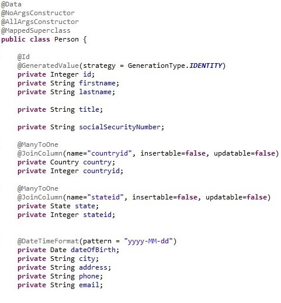
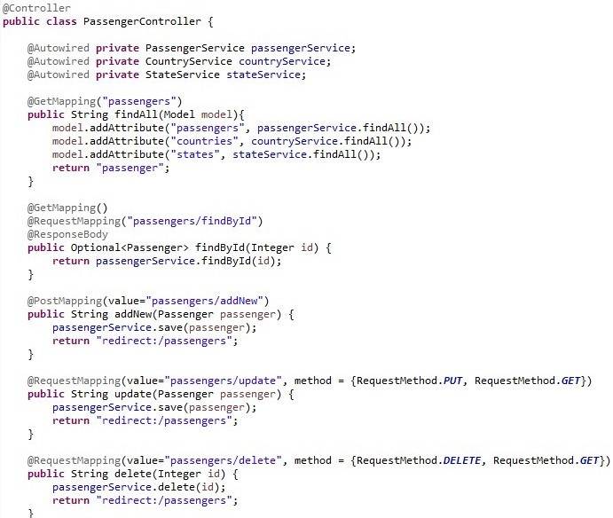
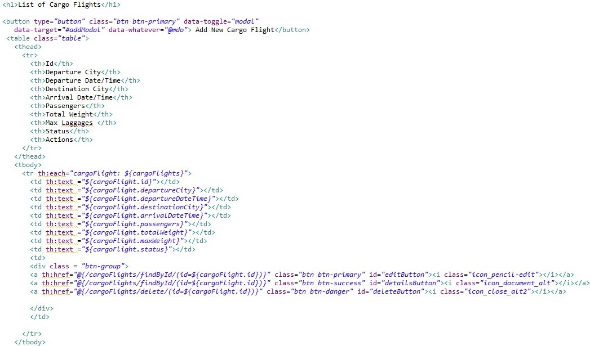
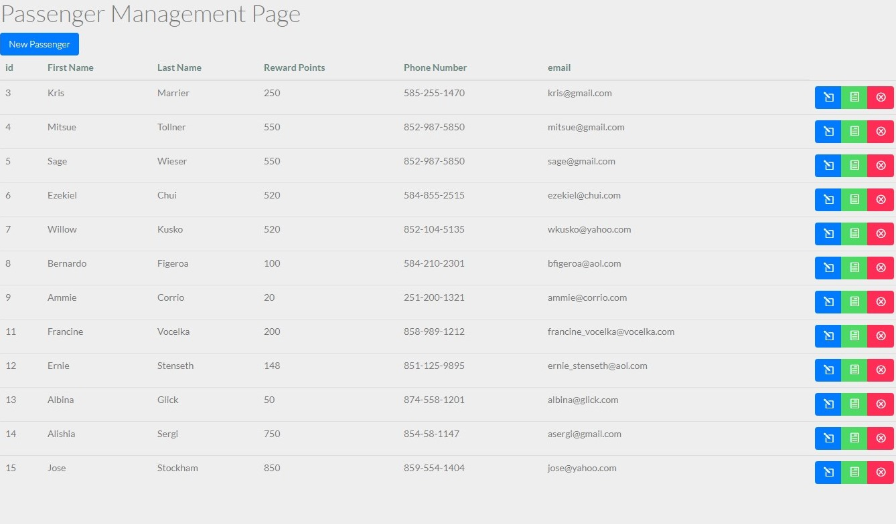
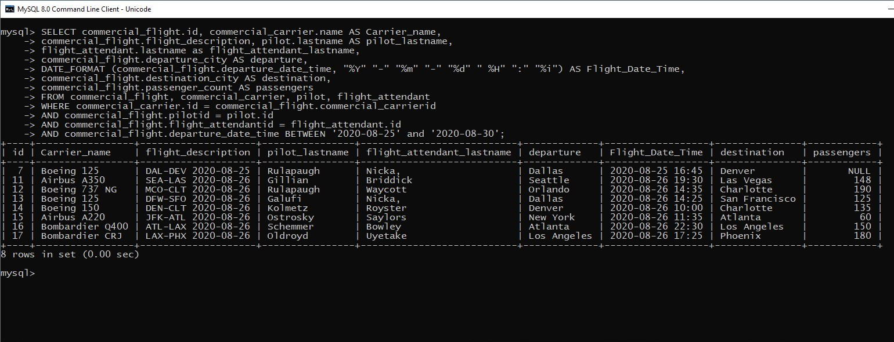
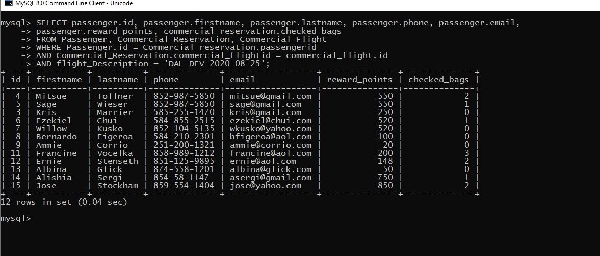
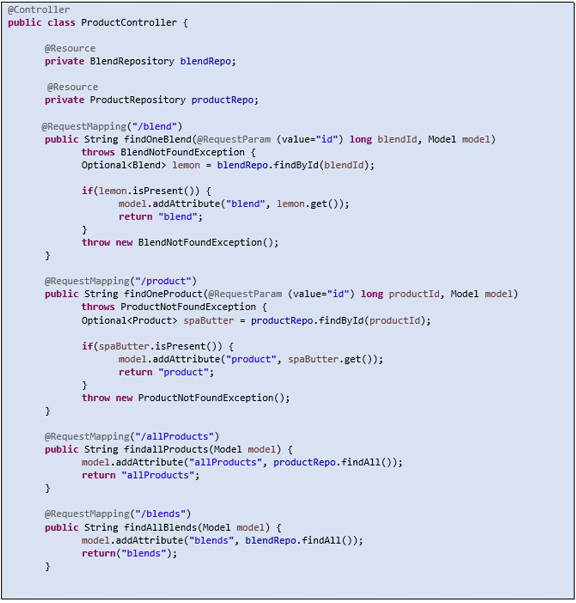

About Me
I love coding and completing projects that involve analytical thinking. I am a self-starter with a business mindset of automating manual processes and improving efficiency in fast paced environments. • I possess proven experience in streamlining
and automating business processes. • I have experience in designing, creating and maintaining databases. • I am multi-task oriented and efficient in a fast-paced environment with ability to meet stringent deadlines. • I'm also proficient
in both written and oral communication with different levels of leadership.
Skill Set: Java • Spring • JPA • JavaScript • MVC • HTML • CSS • Flexbox • Grid • TDD • Object Oriented Programming (OOP) • AJAX • JSON • Thymeleaf • Hibernate ORM • Restful APIs • Structured Query Language (SQL) • MySQL • Relational
Databases • Source Control / Git • JQuery • Agile (Scrum) • SharePoint • Alteryx
Sample Projects Completed
Pluto Airlines:
Created a fully self serving front end and back end application for a simulated Pluto Airlines operations with the following capabilities:
- Add passengers, employees including pilots and flight attendants.
- Add aircrafts – Cargo and Passengers.
- Create Cargo and Commercial flights assigning pilots, flight attendants, aircraft carriers, departure and destination cities, departure and arrival date/times for each flight
- Make Commercial and Cargo reservations by assigning passengers to flights along with count of cheked luggages.
Skills utilized: Spring Data Jpa, Hibernate ORM, MySQL Database, Thymeleaf Template Engine, HTML and CSS, Bootstrap and JQuery.
Git Hub location:
https://github.com/gitonga24/plutoAirlines






Fresh Faces Beauty:
Created a web-based application designed to manage inventory for a beauty salon. Inventory included product types, blends associated with the products and additional product details. Added functionality to add and remove inventory
from stock.
Skills utilized: Spring Initializer, Thyme leaf, Spring MVC Framework, J Unit TDD, JPA wiring, OOP.
Git Hub:
https://github.com/gitonga24/freshfaces

Virtual Pets Amok:
Created a Console Application to conduct transactions and interact with pets in a simulated Pet Shelter organization. Used TDD environment to test the functionality and behaviors of pet. Used interfaces to define pets as either Organic
or Robotic. Addition separation of pets was handled via Abstraction, Polymorphism, Inheritance and Encapsulation.
Technologies used: Iterables, Collections, Interfaces, Extensions, Inheritance.
Git Hub:
https://github.com/gitonga24/virtual-pets-amok

Virtual Pet Shelter:
Created a Console Application to control behaviors of pets in a Pet Shelter based on user prompts. The application handled basic interactions like feeding and playing with pets. The application handled adopting and admitting pets as
well as interacting with pets already in the shelter.
Technologies used: Loops, Branching statements, Collections, Iterables.
Git Hub:
https://github.com/gitonga24/virtual-pet-shelter

Additional Technical Experience
Business Operations Analyst JP Morgan Chase & Co. November 2018 - Present
- Manage SharePoint user access controls and security permissions.
- Create and customize document libraries, list and views in SharePoint.
- Write Oracle SQL queries to retrieve data.
- Create customized InfoPath forms to meet business specifications.
- Build Microsoft Access databases that house archived data for reference.
- Design Alteryx workflows to fetch and prepare Spreadsheet reports for business partners.